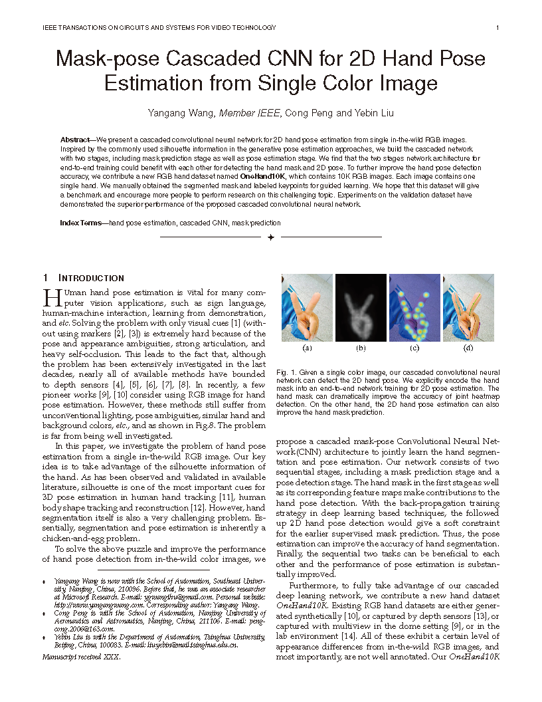

Training Network Solver Deploy Network
Note that we have updated our training platform to Caffe2, the original trained weights are not maintained anymore. You can re-train the network and reproduce the results of this paper by yourself.Update on 2019-07
We have released a more accurate and faster method named as SRHandNet for real-time 2D hand pose estimation. The code is available and please check the new method .
- your name, title or position, and institution or affiliation. (NOTE: this dataset is ONLY for research and non-commercial use. For copyright issue, your institution or affiliation is a must and we do not accept the requirement from individual researchers or students. If you are a student, we encourage you to ask your advisor or the faculty from your research institute, college or university to request the dataset. Institution E-mail address is required.)
-
a statement saying that you accept the following terms of licensing (please copy the licensing text into your email):
The rights to copy, distribute, and use the OneHand10K dataset (henceforth called "OneHand10K") you are being given access to are under the control of Yangang Wang, director of the Vision and Cognition Lab, Southeast University. You are hereby given permission to copy this data in electronic or hardcopy form for your own scientific use and to distribute it for scientific use to colleagues within your research group. Inclusion of images or video made from this data in a scholarly publication (printed or electronic) is also permitted. In this case, credit must be given to the publication: *Mask-pose Cascaded CNN for 2D Hand Pose Estimation from Single Color Image*. For any other use, including distribution outside your research group, written permission is required from Yangang Wang. Any commercial use is not allowed. Commercial use includes but is not limited to sale of the data, derivatives, replicas, images, or video, inclusion in a product for sale, or inclusion in advertisements (printed or electronic), on commercially-oriented web sites, or in trade shows.

|

Related links
|
|